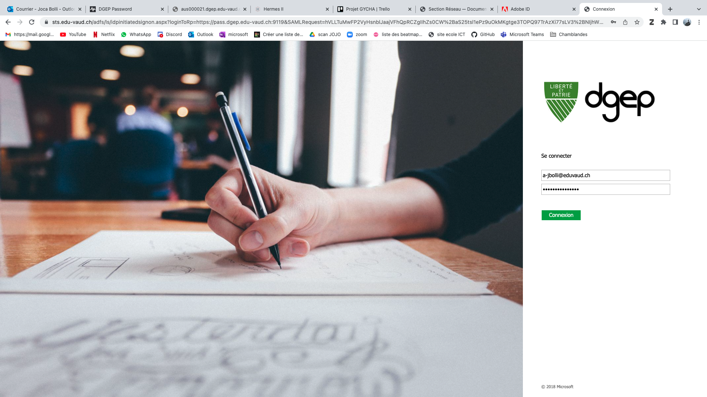
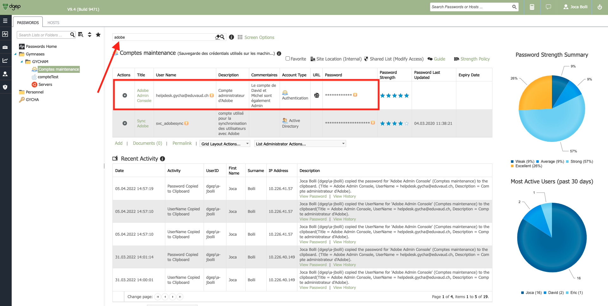
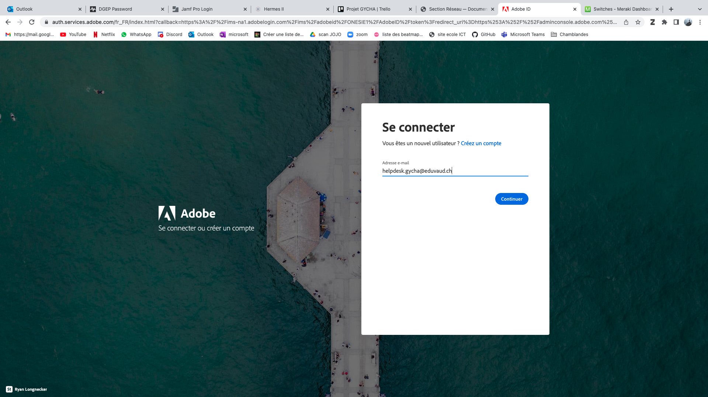
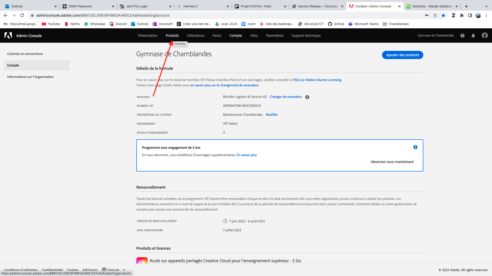
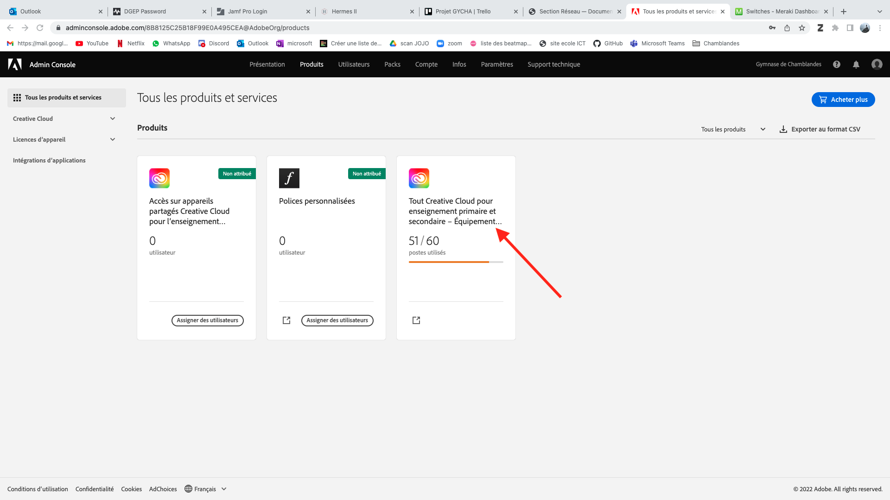
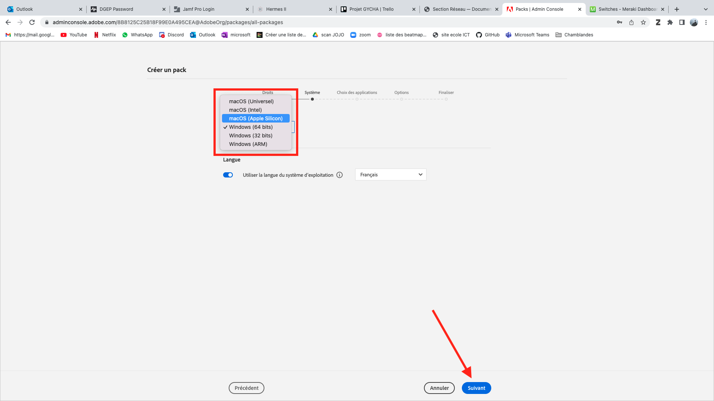
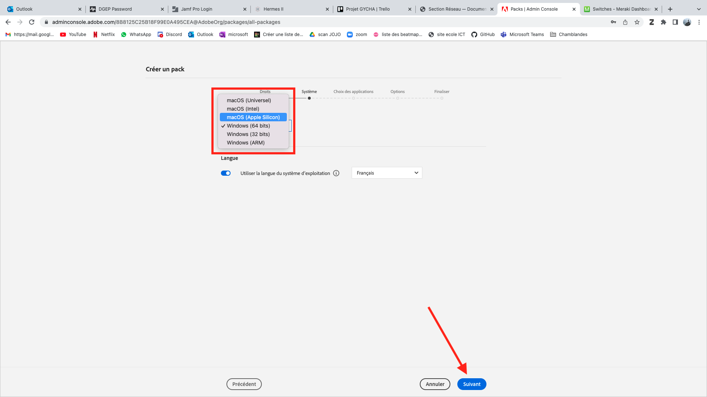
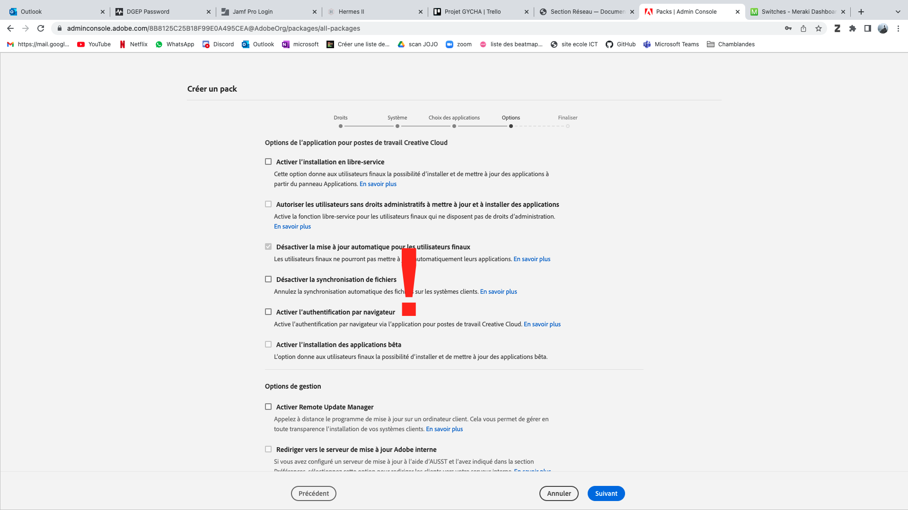

Adobe
Contenu
Adobe¶
Ici je vais vous expliquer comment remmettre les liscence adobe a zéro (vous n’aurez normalement jamais a le faire mais c’est bien de savoir on c’est). Je vais vous montrez également comment crée des PKG avec adobe console. et d’autre choses.
Comment rénisialiser les liscence sur adobe console¶
Pour pouvoir accéder a adobe console (via internet) il faut savoir quel compte utiliser. Pour cela il faut aller sur DGEP passowrd ou l’alternative si il y en a une. Voici le lien pour accéder a DGEP PASSWORD : https://pass.dgep.edu-vaud.ch:9119/

{kind=link}
Une fois que vous avez cliquer sur le lien connecter vous. Dans mon cas j’utiliser mon compte admin a-jbolli. Ensuite cliquer sur Connexion.

{kind=link}
Une fois que vous êtes connecter, aller dans la barre de recherche et taperz “adobe” ensuite vous aller voir le compte, copier l’adresse puis cliquer sur ce lien : https://adminconsole.adobe.com/

{kind=link}

Coller l’adresse mail que vous avez copier juste avant puis cliquer sur “Continuer”. copier coller le mot de passe et connecter vous.

{kind=link}
Une fois connecter rendez-vous sur “pruduits” pour pouvoir ensuite voir tout ce que vous avez accès. Et entre autre pouvoir modifier les licences.

{kind=link}
Une fois que vous avez réussi a accèder a cette fenêtre cliquer sur les licences par poste (Poste utilisé). Dans mon cas il y en a beaucoup car nous étions entrain de l’installer sur tout les poste des salles d’informatiques du gymnase.

Ensuite cliquer sur “default” pour pouvoir accéder a differents paramètre dont celuil qui nous intersse.


Ensuite cliquer sur les trois petit point puis récupérer les licences. ensuite si vous retourner sur produit vous dervriez normalement voir qu’il n’y a plus d’utilisateur (poste utilisé). Et voila vous savez comment récupérer vos licences.
Adobe Console créer des PKG.¶

Pour pouvoir rajouter / créer des pkg il faut dans le menu en haut et cliquer sur packs.

ensuite selectionner licences partagée, parce que c’est pour un groupe de personne. et elle ne son pas “fixe” et cliquer sur suivant

selectionner la même chose que sur l’image si dessus. Ensuite cliqewur sur suivant.
 

{kind=link}
sur cette fenêtre il y a plusieur paramètre a changer, tout dabord il faut changer la langue. Ensuite il faut selectionner pour quel OS vous voulez faire les PKG. Une fois que vous avez choisi ce qu’iil vous convient cliquer sur suivant.

c’est ici que vous allez définir quel application vous aller mettre dans vpotre pkg, le flèche bleu montre comment tout supprimer ou tout rajouter. les carrer rouge a gauche montre les app que vous pouvez rajouter, le carrer rouge a froite montre les app que vous avez rajouter. Une fois que vous vous êtes dessider cliquer sur suivant.

{kind=link}
sur cette page desselectionner TOUT, garder ce qui est selectionner de base. Cliquer ensuite sur suivant

Une fois que vous avez fais toutes ces étape il sufis de cliquer sur comiler votre pack est attendre. Maintenant vous savez comment faire ;).